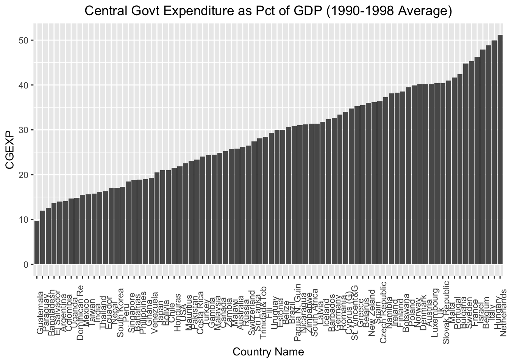
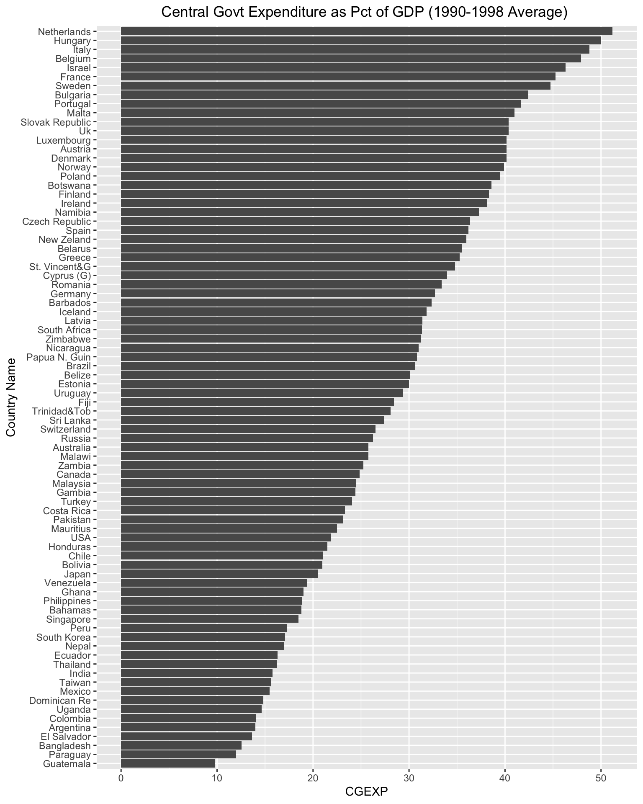
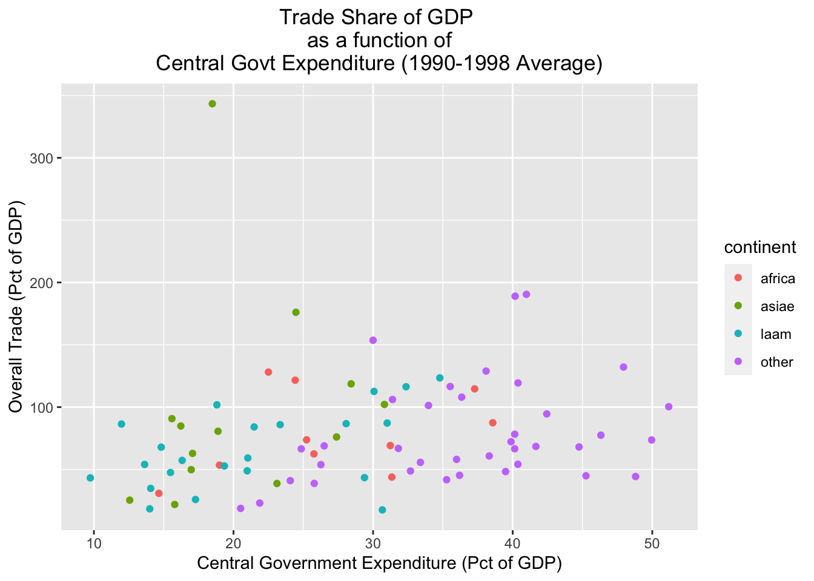

5 Exploratory visualizations using ggplot
5.1 Bar charts
5.1.1 Basic bar chart
# Creates a bar chart of the "cgexp" variable (central government expenditure as a share of GDP) and assigns the plot to an object named "cgexp_viz1"
cgexp_viz1<-pt_copy %>%
drop_na(cgexp) %>%
ggplot()+
geom_col(aes(x=reorder(country, cgexp), y=cgexp))+
labs(title="Central Govt Expenditure as Pct of GDP (1990-1998 Average)", x="Country Name",
y="CGEXP")+
theme(plot.title=element_text(hjust=0.5),
axis.text.x = element_text(angle = 90))
# Prints contents of "cgexp_viz1"
cgexp_viz1
5.1.2 Inverted bar chart
# Creates an inverted bar chart of the "cgexp" variable (with countries on vertical axis) and assigns the result to an object named "cgexp_viz2"
cgexp_viz2<-pt_copy %>%
drop_na(cgexp) %>%
ggplot()+
geom_col(aes(x=reorder(country, cgexp), y=cgexp))+
coord_flip()+
labs(title="Central Govt Expenditure as Pct of GDP (1990-1998 Average) ", x="Country Name",
y="CGEXP")+
theme(plot.title=element_text(hjust=0.5))
# Prints contents of "cgexp_viz2"
cgexp_viz2
5.2 Scatterplots
5.2.1 Basic scatterplot
# Creates scatterplot with "cgexp" variable on x-axis and "trade" variiable on y-axis and assigns to object named "scatter_cgexp_trade"
scatter_cgexp_trade<-
pt_copy %>%
drop_na(cgexp) %>%
ggplot()+
geom_point(aes(x=cgexp, y=trade))+
labs(title="Trade Share of GDP \nas a function of\n Central Govt Expenditure (1990-1998 Average) ",
x="Central Government Expenditure (Pct of GDP)", y="Overall Trade (Pct of GDP)")+
theme(plot.title=element_text(hjust=0.5))
# Prints contents of "scatter_cgexp_trade"
scatter_cgexp_trade
5.2.2 Grouped scatterplot
# Creates scatterplot with "cgexp" variable on x-axis and "trade" variiable on y-axis, and uses different color points for different continents; plot is assigned to object named "scatter_cgexp_trade_grouped"
scatter_cgexp_trade_grouped<-
pt_copy %>%
drop_na(cgexp) %>%
ggplot()+
geom_point(aes(x=cgexp, y=trade, color=continent))+
labs(title="Trade Share of GDP \nas a function of\n Central Govt Expenditure (1990-1998 Average) ",
x="Central Government Expenditure (Pct of GDP)", y="Overall Trade (Pct of GDP)")+
theme(plot.title=element_text(hjust=0.5))
# Prints contents of "scatter_cgexp_trade_grouped"
scatter_cgexp_trade_grouped
5.2.3 Scatterplot with line of best fit
# Creates scatterplot with "cgexp" variable on x-axis and "trade" variiable on y-axis, adds line of best fit; plot assigned to object named "scatter_cgexp_trade_line"
scatter_cgexp_trade_line<-
pt_copy %>%
drop_na(cgexp) %>%
ggplot()+
geom_point(aes(x=cgexp, y=trade))+
geom_smooth(aes(x=cgexp, y=trade), method="lm")+
labs(title="Trade Share of GDP \nas a function of\n Central Govt Expenditure (1990-1998 Average) ",
x="Central Government Expenditure (Pct of GDP)", y="Overall Trade (Pct of GDP)")+
theme(plot.title=element_text(hjust=0.5))
# Prints contents of "scatter_cgexp_trade_line"
scatter_cgexp_trade_line## `geom_smooth()` using formula 'y ~ x'
Figure 5.1: test